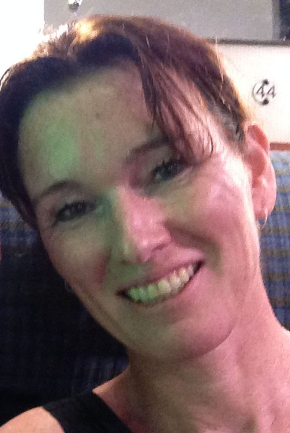
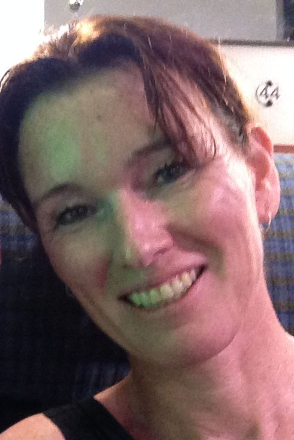

MeTherapy staat voor Tijd en Aandacht voor jezelf, om door Afstand te nemen van jezelf, Bewustwording en Inzicht te krijgen. Door bewust en onbewust te focussen, komen je hart en hoofd meer in balans, en kom je Dichter bij Jezelf.
MeTherapy helpt bij angst, onzekerheid, faalangst, stress, burn-out, pijn, onverklaarbare lichamelijke klachten, PDS, depressie, somberheid, verslavingen en tal van andere problemen waarbij de samenwerking tussen lichaam en geest heel belangrijk is.
Vaak weet je al (jaren lang) veel over je kwaal of klacht, maar ondanks van alles er aan gedaan te hebben, lost het probleem niet op. Integrale psycho- en hypnotherapie maakt gebruik van onbewuste processen in jezelf, waardoor het kwartje nu eindelijk kan vallen en klachten verminderen of verdwijnen.
MeTherapy wordt gerund door Mariëlle Janssen: maatschappelijk ondernemer, bewegings-wetenschapper en integraal psycho- en hypnotherapeut. Mariëlle is als therapeute aangesloten bij de NBVH en SSZ, waardoor vergoeding mogelijk is vanuit de aanvullende verzekering.
Zowel overdag als s'avonds kan er een afspraak gemaakt worden. De behandeling is aan de Geuzingerbrink 94 te Emmen en kan eventueel online worden toegepast.


 aarom?
aarom?

 
